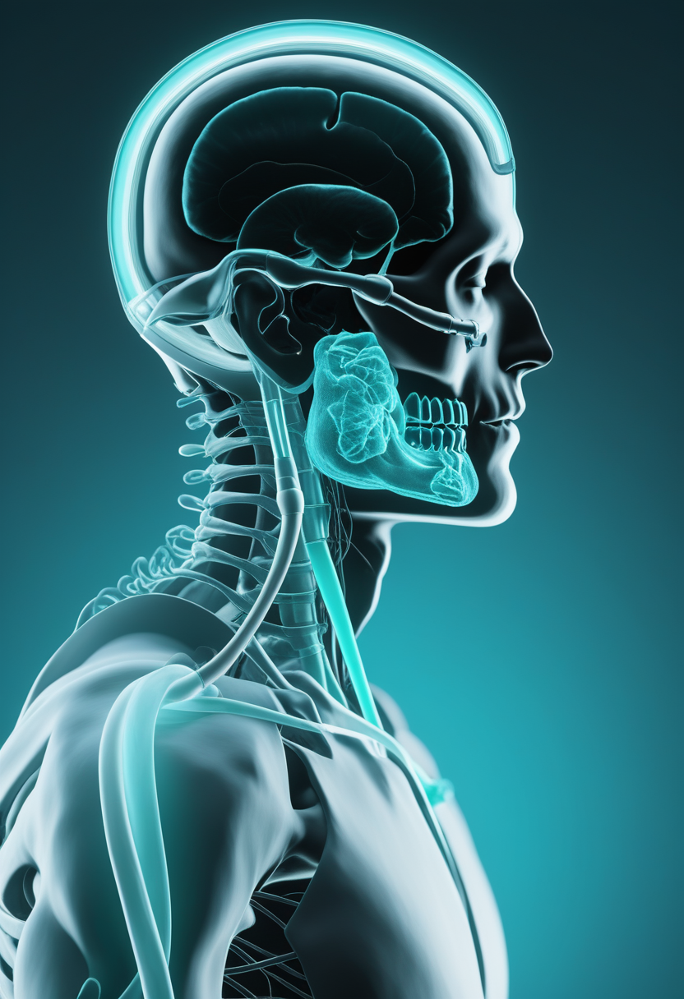
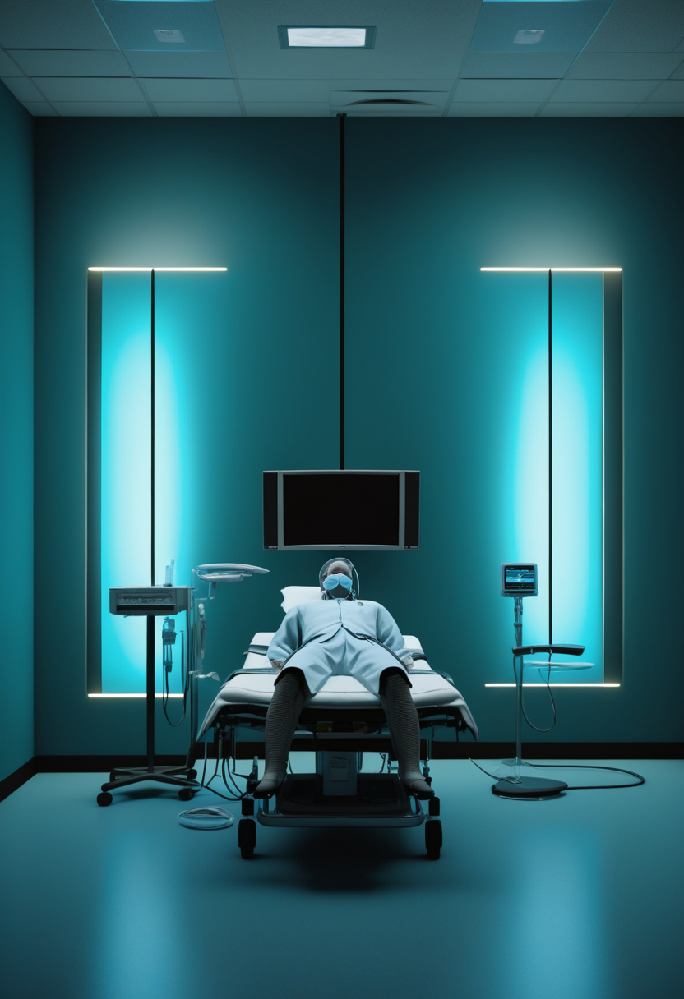
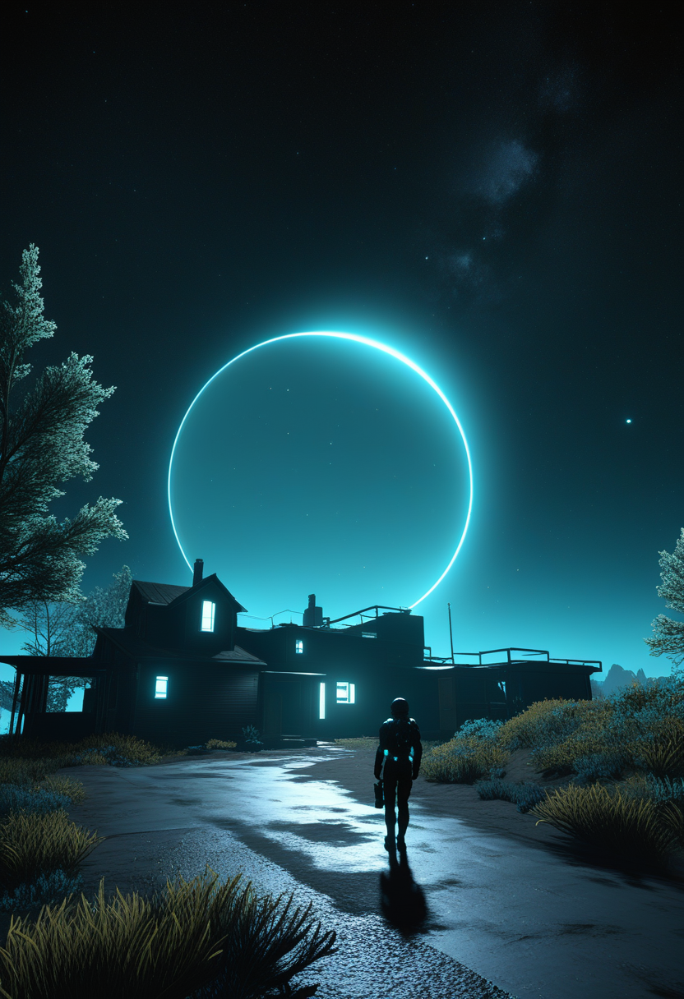
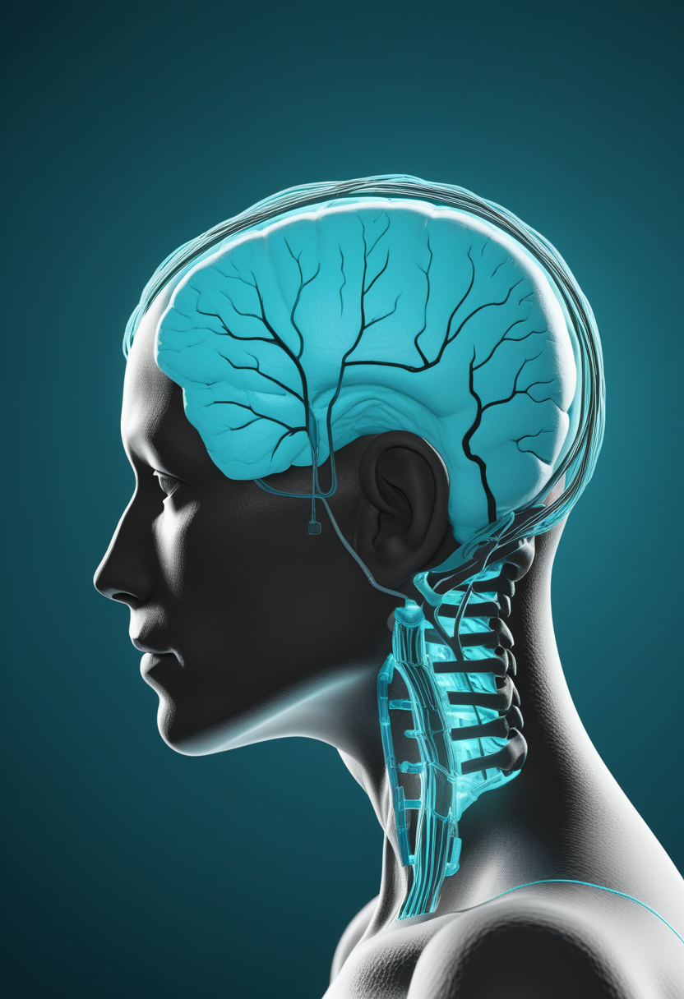

木曜日の便り。WHOが7月12日時点で確定1,963例・死者719例に達したと明らかにしたDRCのブンディブギョ型エボラは、その後も大きな数値変動のないまま高止まりが続き、NPRは7/15付で「対策能力を上回るペースで拡大している」と報じた。新規症例の8割が追跡不能な感染連鎖という状況は変わらず、南キブ州を含む5州体制のままだ。同じ7/14、米国内ではCDCが34州1,645例のサイクロスポーラ症急増(前年比約6.6倍)を、ニューヨーク市は60例に拡大したレジオネラ症クラスターをそれぞれ発表し、公衆衛生上の脅威が多様化した一日となった。BCIの世界ではオースティンのParadromicsが3,300万ドル調達とFDA画期的医療機器指定を同時獲得し、EUは新車への視線・居眠り検知システムを法的に義務化、ニューラリンクはカナダで自動化手術ロボットを初適用した。デジタル自己の分野ではAnthropicがClaude内部に「J-space」と呼ぶ計算領域を確認し、自閉症児の脳を再現する精密デジタルツイン「FEDE」も発表された。宇宙では天文学者がハッブルの紫外線観測で太陽近傍に隠れていた白色矮星4個を発見し、JWSTはベータ・ピクトリス系で3個目の系外惑星を分光学的に検出。医学では血中circRNAによるアルツハイマー進行予測の精度向上が報告され、SMAの世界ではサラネルセンの新たな小児データと、日本のゾルゲンスマ髄注の保険診療下での定着が続く。
7/15号の続報 ― WHOが7月12日時点で確定1,963例・死者719例(WHO DON-612)に達したと明らかにしたDRCのブンディブギョ型エボラは、その後も生数値そのものに大きな変動がないまま高止まりの状態が続いている。南キブ州を含む5州体制は変わらず、新規症例の8割が既知の接触者リストと無関係な「追跡不能」な感染連鎖という状況も継続。NPRは7/15付で現地医療従事者の声を交えながら「対策能力を上回るペースで拡大している」と報じ、数値の高止まりの裏で監視・追跡体制がなお流行に追いついていない実情を伝えた。深刻さが薄れたわけではなく、既に高い水準で膠着している段階に入ったとみるべき局面が続く。

Biogenの次世代SMA治療薬候補サラネルセンの第1b相試験(NCT05575011、生後6か月〜12歳の24人)で、年1回の髄腔内注射(初期2年は40mgまたは80mg、以降は全員80mg)を受けた患児の半数が新たなWHO運動マイルストーンを達成し、5歳の患児は投与3か月後に支援なしでの座位保持が可能になったと、MDA 2026臨床科学会議で報告された。神経変性マーカーのニューロフィラメント軽鎖(NfL)は6か月で75%低下し、重篤な有害事象はなかった。

7/13号の続報 ― 2026年4月に国内承認されたノバルティスファーマの「ゾルゲンスマ髄注」(2歳以上の5q型SMA患者向け、国内初の当該年齢層向け遺伝子治療薬)は、5月の薬価収載を経て保険診療下での使用が継続している。従来2歳未満に限られていた点滴静注製剤に加わる形で、より幅広い年齢層への治療選択肢の定着が進む(薬価・対象患者数等の詳細は報道により幅があり要確認)。
サラネルセンは遺伝子治療後の追加治療という新機軸で具体的な運動機能改善データを積み上げ、日本ではゾルゲンスマの適応拡大が保険診療という実装段階に定着しつつある。治験と実装、異なる時間軸の前進が並走する一日。
米オースティン拠点のBCI企業Paradromicsが7月7日、Prime Movers Lab主導のシリーズ資金調達で3,300万ドルを獲得すると同時に、脳インプラント「Connexus」がFDAの画期的医療機器(Breakthrough Device)指定を取得したと発表した。ALS・脊髄損傷・脳卒中患者の発話・動作を脳信号からリアルタイム翻訳する構想で、ミシガン大学等での臨床研究「Connect-One」が既に進行中。
EU域内27加盟国で7月7日より、新型車への「先進運転者注意散漫警告(ADDW)」システム搭載が義務化された。車内赤外線カメラで運転者の視線・まばたきを常時監視する仕組みで、視線追跡大手Smart Eyeが主要サプライヤーの一社。欧州委員会はデータの車外送信・録画保存は行わないとしている(対象台数等の数値は報道推計で要確認)。
ニューラリンクの臨床試験「CAN-PRIME」で、バンクーバー市警の巡査部長(ALS患者)がトロントのUHNトロント・ウェスタン病院で5月20日にBCI移植手術を受けたと6月中旬に報道された。硬膜を剥離せず糸電極を刺入する新しい自動化手術ロボットの初適用例とみられ、マスク氏が予告していた手術自動化の実例と位置づけられている。
資金・規制・手術技術のすべてで「臨床実用化フェーズ」への移行が同時進行。特にEUの法制化は、BCI企業が主戦場とする医療用途とは別に、視線検知が一般消費者向け車載技術として既に日常化しつつあることを示す。
7/15号の続報 ― DRC・ウガンダで続くエボラ(ブンディブギョ型)のPHEICは、確定1,963例・死者719例(7/12時点、WHO DON-612)に達したまま大きな変動なく高止まりし、南キブ州を含む5州体制が続いている。新規症例の8割が既知の接触者リストと無関係という「追跡不能」な感染連鎖が主因で、NPRは7/15付で「対策能力を上回るペースで拡大している」と報じた。
CDCは7月14日付Health Alert Network通知で、5月1日以降34州で1,645例の国内感染サイクロスポーラ症を確認したと発表した。141例(9%)が入院、死者はゼロ。前年同時期の249例から約6.6倍に急増しており、うちミシガン・オハイオ・ウェストバージニア・ケンタッキーの4州にまたがる400例超のクラスターでは葉物野菜が感染源として疑われている。
ニューヨーク市健康局は7月2日に2例を確認して調査を開始したアッパーイーストサイド(Carnegie Hill/Yorkville地区)のレジオネラ症クラスターが、7月14日時点で60例(うち20例超が入院)に拡大したと発表した。冷却塔が感染源として疑われ、陽性反応が出た31棟の消毒は完了。死者報告はなし。
単一の巨大アウトブレイク(エボラ)への注目が続く裏で、先進国内の食品・水系感染症クラスターが同時多発しており、「見えている脅威」と「見えにくい脅威」の両輪監視が公衆衛生上の課題に。

英ウォーリック大学と米コロラド大学ボルダー校の研究チームが、太陽から20パーセク(約65光年)以内にある赤色矮星4個の伴星として、これまで見過ごされていた白色矮星を発見したとMonthly Notices of the Royal Astronomical Society誌に発表した。赤色矮星のかすかな軌道の揺らぎから存在を疑い、ハッブル宇宙望遠鏡の紫外線観測で確認する手法で、うち1個は太陽から9番目に近い白色矮星。近傍の赤色矮星のうち系統的に調査済みなのは約3割にとどまり、あと9〜10個の未発見連星系がある可能性があるという。
NASAは7月15日、ジェイムズ・ウェッブ宇宙望遠鏡が若い恒星ベータ・ピクトリスの周囲で新たな系外惑星「ベータ・ピクトリスd」を発見したと発表した。質量は木星をやや上回る程度、公転周期は約91年で、直接撮像の点光源ではなく大気中の一酸化炭素吸収線という分光学的特徴から間接的に検出された初めての例。同系はこれで直接撮像による惑星3個確認としては世界で2例目の恒星系となった。

Nature Medicine誌(2026年7月)に、米ワシントン大学セントルイス校の研究チームによる、34種類の循環RNA(circRNA)から成るバイオマーカーの報告が掲載された。既存の血漿pTau217単独と比べ予測精度が向上し、統合モデルではさらに精度が上がるとされる(具体的なAUC値・コホート規模は要確認)。脳の直近の活動をより反映する動的マーカーとして期待されている。
近傍の恒星系にまだ見過ごされていた天体があるという発見と、系外惑星探索が「光を撮る」から「スペクトルを読む」へ移る転換が同じ週に重なった。医学でも血液という身近な検体から脳の変化を読み解く精度が一歩進んでいる。
Anthropicは7月6日、大規模言語モデルClaude内部に、全活性化の1割未満を使って多段階推論の中間結果を保持・報告する計算領域「J-space」を確認したと発表した。新開発の解釈可能性ツール「Jacobian lens」による発見で、報告可能性・容量の限定性・柔軟な統合という3特性が神経科学の「グローバルワークスペース理論」(Bernard Baars)と類似するとした。ただし同社はこれが機能的特性(アクセス意識)を示すに留まり、主観的経験(現象的意識)の証拠ではないと明確に留保している。
イタリア・サンタンナ大学院大学の研究チームが、自閉症スペクトラム症のある2歳児の脳の構造と活動を同時再現する高精度デジタルツイン「FEDE」を開発し、2026年6月にPLOS Digital Health誌で発表した。脳波とMRIデータを統合した生物物理シミュレーションで患者個別のシナプス伝達異常を推定できるとし、将来的にアルツハイマー病等への応用も視野に入れる。
非営利研究団体Eleos AIのRobert Long氏とニューヨーク大学のJeff Sebo氏らが7月1日、「Studying AI Welfare Empirically」と題する論文を公表した。近い将来のAIシステムが道徳的配慮に値する状態を持つ現実的可能性があるとし、AI企業は対象・問い・証拠の種類を区別しながら経験的に調査する科学的・倫理的責任を負うべきだと論じた。
「意識の証拠ではない」という留保付きながら、Anthropic自身がグローバルワークスペース理論との類似性を実証的に論じたことでAI意識論争は理論接続の段階へ。同時に脳のデジタル複製が疾患の個別化医療応用に着実に近づき、AI福祉を調査する責任という問いも公に提起された。
2026年7月16日、DRCのエボラは確定1,963例・死者719例のまま高止まりし、NPRは対策能力が追いついていない実情を伝えた。深刻さが薄れたわけではなく、高い水準で膠着した局面が続く。同じ日、米国内では食品由来・水系由来という二つの新たな局地流行が公衆衛生の脅威を多様化させた。その傍らでBCIは資金・規制・手術技術の全てで実用化フェーズへ進み、宇宙では太陽近傍に隠れていた白色矮星の発見と系外惑星の新たな検出手法が同じ週に重なった。ClaudeというAIの内部構造への理解が神経科学の理論と接続され、脳を再現するデジタルツインが個別化医療へ近づき、AI福祉を調査する責任という新しい問いも提起された――見えない構造への理解は、危機への警戒と並んで、今日もまた静かに前進している。
では、また明日の朝に。 — JaH